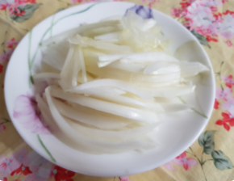
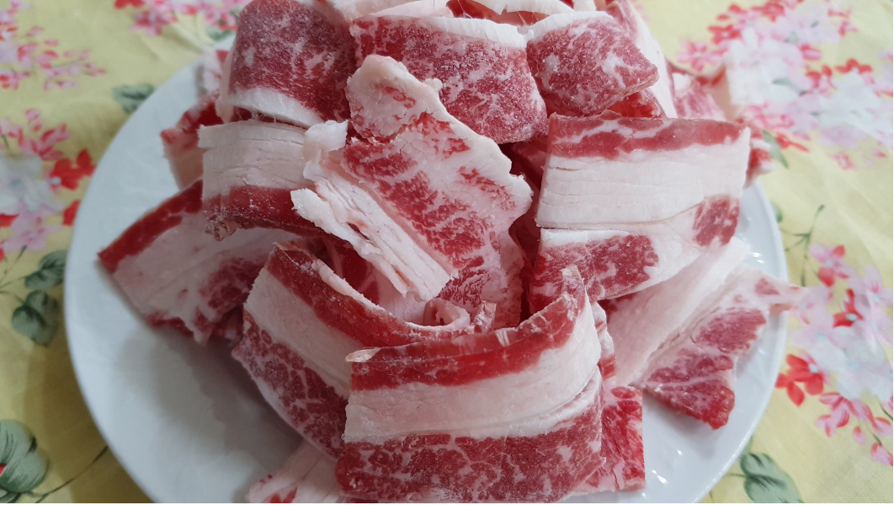
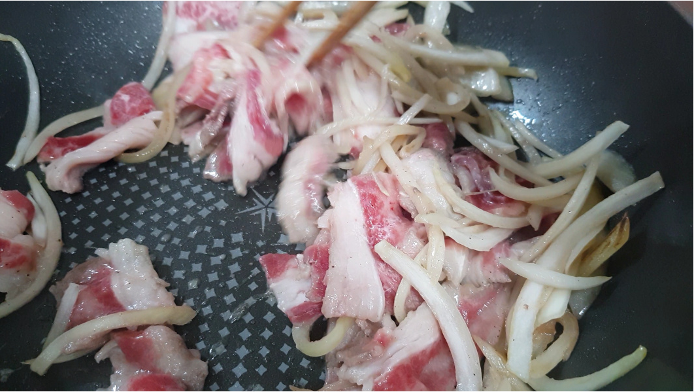
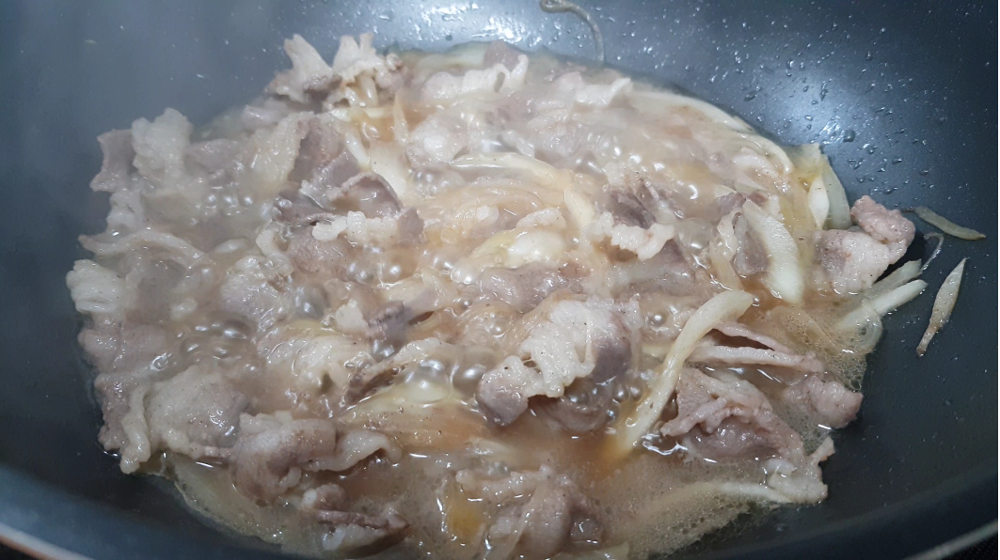
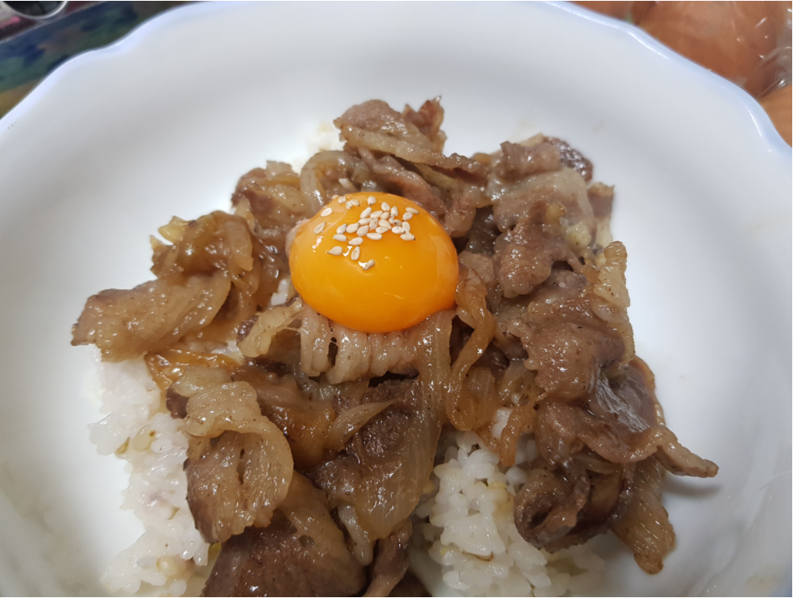

Japanese Food


재료 리스트
2인분 기준 밥 2공기 | 다시마 육수 2컵 | 올리고당 2스푼 | 양파 1/2개 | 들기름 2스푼 | 우삼겹살 210g | 간장 4스푼 | 설탕 2스푼 | 후추 | 달걀 노른자 2개 |
레시피
1. 육수를 만들어야 하는데 육수는 다시마만 우려 낸 육수를 사용하여도 무방합니다.
우려낸 육수에 간장과 올리고당, 설탕을 넣고 잘 섞어 양념을 만들어주세요.

2. 채소는 대파를 넣어도 좋지만 양파 반개를 준비하여 채썰어주세요.

3. 우삼겹살도 먹기 좋은 크기로 썰어서 준비해주세요.

4. 고기를 먼저 볶다가 양파를 나중에 넣어주세요.

5. 소고기가 절반 정도 익었을 때 만들어 놓은 소스를 한꺼번에 붓지말고
절반 정도 넣어 간을 보며 졸여주세요.

6. 소고기가 익는 동안 규동을 담을 그릇 바닥에 들기름 1스푼을 넣어주세요.
그냥 밥만 올리는 것보다 들기름을 올리면 풍미가 더 좋기 때문입니다.
따뜻한 밥을 올리고 짭조름 하고 달큰하게 졸려진 고기를 올려주세요.
그 위에 최대의 고소함을 만들기 위해 달걀 노른자를 올린 뒤 쪽파를 쏭쏭 썰어 고명으로 올려 주세요.

규동 완성 !!